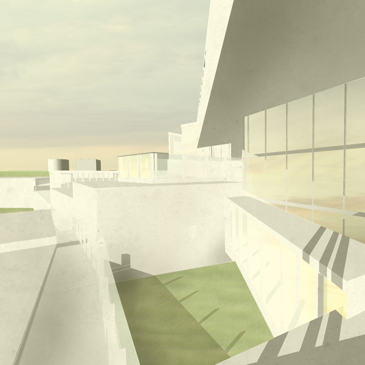
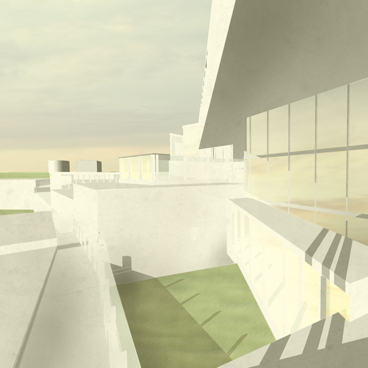
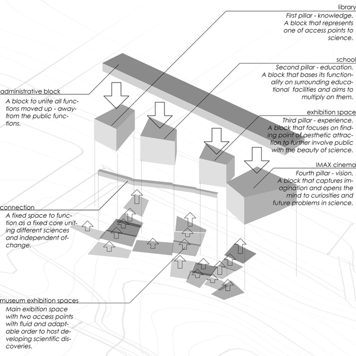
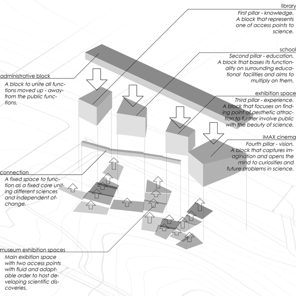
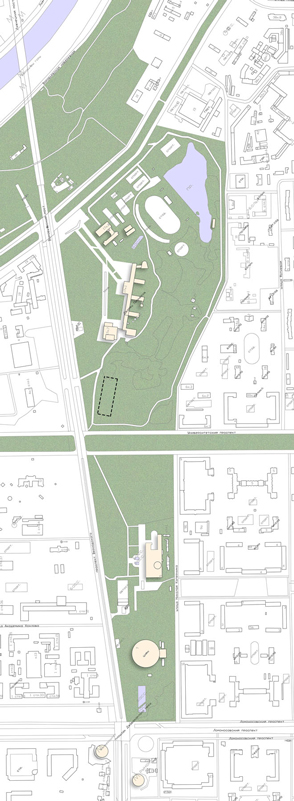
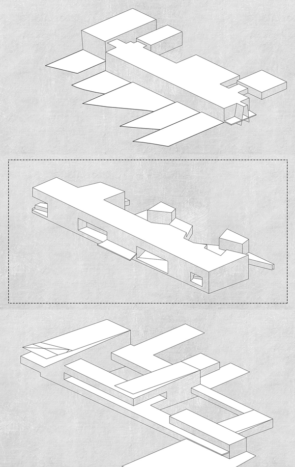
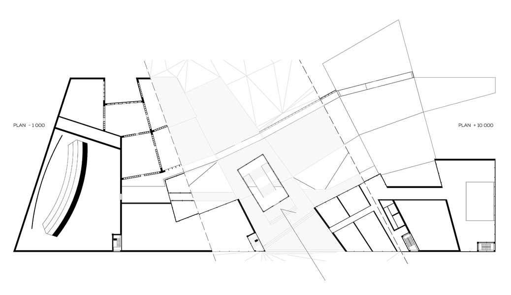
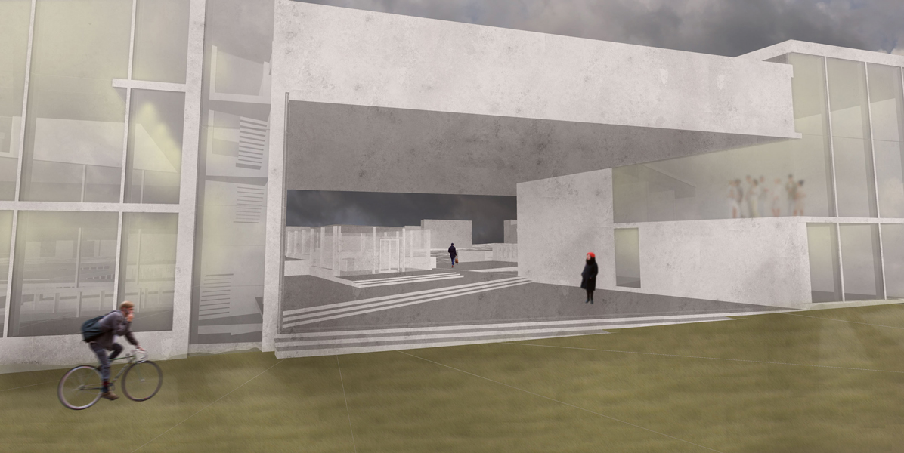
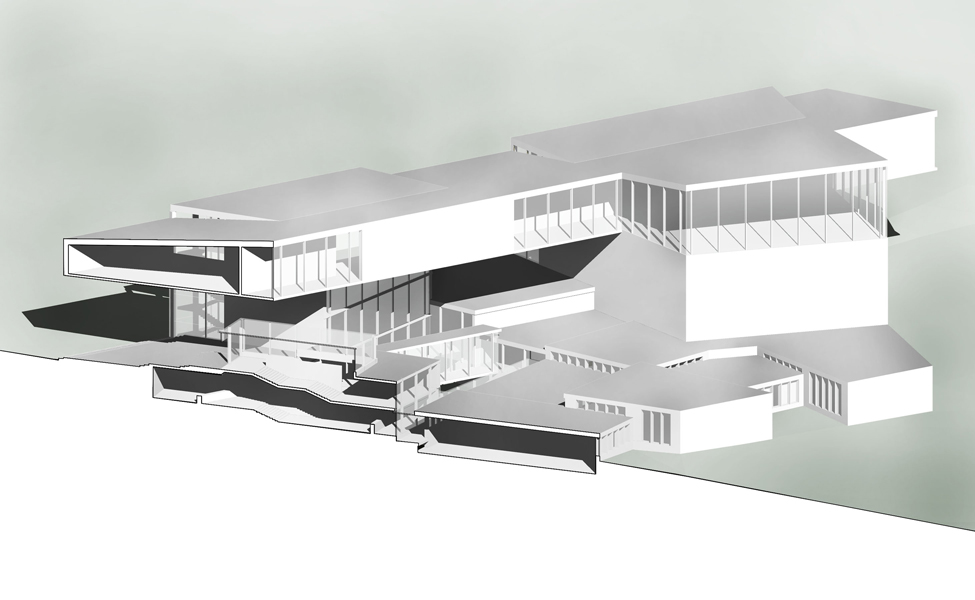

project
of science
museum
проект
музея
науки
 


This was a studying project in a bachelor program in Moscow Architectural Institute. The task was to design a museum while the site and specialization are up to the student to find and develop.
Task
 
As opposed to common approach this project began not from site, but rather from the functional outline. Future museum was chosen to be dedicated to science and include functions related to four main pillars of science knowledge, education, experience and vision. Apart from public domain, the functionality grew to include satellite roles based on investigation of modern international practices as well as of needs of scientific educational community.
Functions
Based on the scheme the site was singled out to be a part of Moscow's Children Extra-curriculum Studying Center. It is an impressive complex with roots in 60's. Generations of kids, myself included, grow up trying everything from sports to arts in there. The original complex proposal included other roles that at the time were considered extraneous and cancelled on construction. Based on this functional void and with respect to the existing master plan a place with extensive relief and on one of the main access points was selected.
Site
The volumetric approach grew from the two described researched avenues. So respecting the relief the building gradually follows down creating terraces for the people to access the ravine gradually dissolving to the park. Based on four main components of public domain of functions, four corresponding transitional roles were singled out to take form of rising pillars, supporting more isolated research and administrative roles of the project preserving views and isolating workers.
Volumetric search
Public spaces where than divided up into gallery spaces and paths through were developed, carefully maintaining rough division of 4 themes but with clear linkage between them. Secondary pillar structures were than adapted to developed axis and became a blending element to transition to a more regular system of administrative functions on the top block.
Plans
The resulting space utilized all the benefits such spatial system brings - variety of relative positions of galleries, unexpected vantage points, curious and shifting atmosphere through the building, etc. Moreover, given fast pace of scientific and technological development a modular and adaptive structural system was proposed to host structural support for broad variety of installations and could be potentially grown further down the hill.
Renders
The resulting building managed to simultaneously blend in to the nature and the urban context while hopefully providing a meaningful addition to the educational and research field of surrounding giants as well as creating a powerful and bright attraction point on its own.
Result
Этот проект был выполнен в процессе учёбы на бакалавриате в Московском Архитектурном Институте. Задача была спроектировать музей, функционал и расположение были на усмотрение и разработку студента.
Задача
В противовес привычному подходу, проект начался с разработки функции, а, не отталкиваясь от конкретного участка. Будущий музей было решено посвятить науки. Он должен был включать в себя функции вокруг 4 фундаментальных элементов: знания, образования, опыта и воображения. Помимо этого вокруг них стали закручиваться спутниковые общественные задачи, всплывшие в процессе изучения международных аналогов и климата научно-образовательского общества в Москве.
Функции
Так базируясь на разработанной структуре, было выбрано включить музей в состав Дворца Пионеров на Воробьевых Горах. Этот значительный комплекс растёт корнями в 1960ые и первоначально включал больше объектов и ролей, которые при строительстве были сочтены лишними и отменены. Основывая на этой функциональной нише в мастер-плане, участком стал крутой склоне при одной из главных входных осей в комплекс.
Участок
Объёмная структура в конечном итоге была основана на двух обозначенных направлениях исследования: функция и участок. Так основные помещения дублируют рельеф, постепенно спускаясь в овраг, сохраняя доступ посетителям к парковой зоне. План при этом пронизан четырьмя блоками, соответствующими выявленным функциональным группам. Блоки в свою очередь поддерживают административные и исследовательские помещения музея, сохраняя одновременно виды и изолируя работников.
Поиски объёма
Общественные пространства затем были разделены на галереи и пронизаны сквозными путями. При этом структура аккуратно сохраняла примерное деление на 4 тематических блока плавно перетекающих один в другой. Структура второстепенных блоков затем была разработка с задумкой создать переходный элемент к более регулярной планировке административного верхнего блока.
Планировка
Созданная структура использует максимально потенциал участка: гибкое расположение галерейных помещений, непредсказуемые уникальные видовые точки, интригующая и изменяющаяся атмосфера здания в целом, и т.д. Более того, в виду скорости развития науки и технологий была предложена модульная система конструкций галерей, которая способна вместить дополнительную структурную поддержку экспонатов, будучи легко изменяемой и, потенциально расширяемой далее вниз по оврагу.
Рендеры
В итоге, проект одновременно естественно вписан в уникальную природную среду и в городской контекст научно-образовательных гигантов вокруг, внося потенциально значимую лепту. При этом музей может стать ярким центром притяжения и сам по себе.
Результат